Freins & Dérailleurs
Réparation et réglage de vos systèmes de freinage et de transmission.
Association bénévole · Perpignan
Apprenez à réparer votre vélo dans notre atelier participatif. Outils pros, bénévoles passionnés, démarche solidaire et écologique.

L'Atelier Vélo du Vernet assure l'entretien et la remise en état de tous types de vélos : VTT, vélos de route, vélos de ville, vélos électriques et vélos enfants.
Notre atelier participatif met des outils professionnels à votre disposition. Nos bénévoles vous guident pas à pas pour apprendre à réparer vous-même.
Ouvert à tous, nous nous inscrivons dans une démarche solidaire et écologique en faveur de la mobilité douce.
Réparation et réglage de vos systèmes de freinage et de transmission.
Remplacement et réparation de crevaisons, pour tous types de roues.
Réglage de la chaîne, dérailleur, vitesses et pédalier.
Vérification de l'ensemble du vélo, conseils d'entretien personnalisés.
Apprenez à réparer vous-même avec nos bénévoles et nos outils pros. Ouvert à tous les niveaux.
Une démarche solidaire et écologique pour remettre les vélos en selle.
Lundi au vendredi, de 9h à midi.
Entrée, parking, toilettes et places assises accessibles en fauteuil roulant. Parking gratuit.